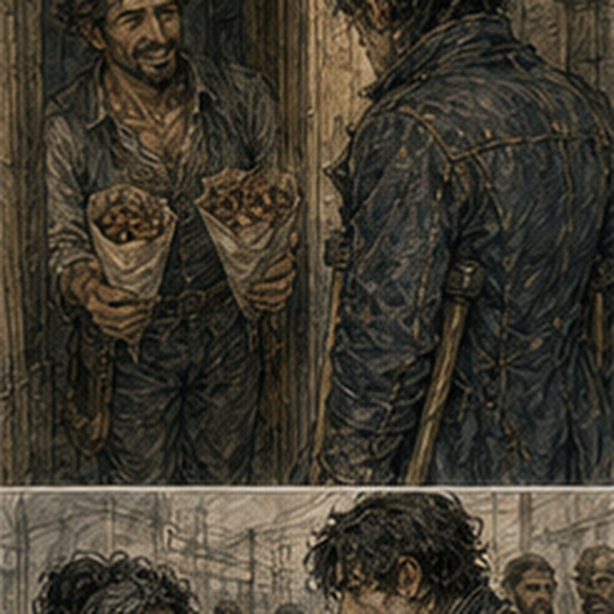
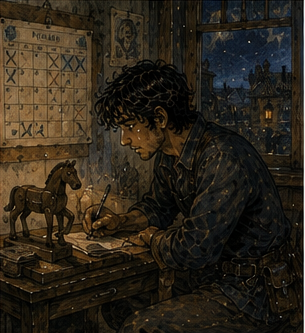

I bought groceries. This was becoming alarming. Bread. Eggs. Two onions. Dried beans. A piece of hard cheese that would survive my room better than I would. Salt. I stood in front of a basket of apples for too long. Not because they were expensive.
Because I was deciding how many days I would be home to eat them. This was worse than the calendar.
“Three,” the seller said.
“What?”
“You've been staring at them. Buy three.”
“I may only need two.”
“Then eat the third.”
I looked at her. She looked at me. Strong argument. I bought three. At the lodging I put everything away. There was now enough food for after the road job. Not survival food. Not emergency food. Food for when I came back. I disliked how much that mattered.
The schedule page beside the mirror said:
TODAY
Arlo? ROAD DAY ONE
ROAD DAY TWO
Hessa
blank
blank
Alden I had written blank. Actually written it. This was administrative madness. The wooden horse stood beneath the page. Secretary. Unqualified. I ate one apple immediately, which damaged the plan but improved the morning. Then I put on the new gloves. Road job tomorrow. Inspection. Pessa lead. Dorn. No repair. Bring food.
I needed nothing else. Probably. I checked my boots. Soles good. Laces good. One eyelet starting to pull. Not tomorrow's problem. Could become tomorrow's problem. I stared at it. Then took the boots to Tam. He was at the bench. Of course.
“Morning,” I said.
“Boot,” Tam said.
“Yes.”
He took it. Looked at the eyelet.
“Tomorrow?” he asked.
“Road,” I said.
He grunted. Pulled the lace.
“Half hour.”
“Cost?”
“One copper.”
“Good.”
“Sit.”
I sat. This was apparently what regular customers did. Tam removed the eyelet, reinforced the leather with a small backing patch, punched a new hole, and set a fresh ring. No mystery. No future knowledge. Competence. I watched his hands. He noticed.
“You want to learn?”
“No.”
“Then stop staring.”
“I like knowing how things work.”
“You don't need to know how this works.”
“I know.”
That was true. I kept watching anyway. Tam said, “Jorren's not here.”
“I didn't ask.”
“You looked upstairs.”
“I have eyes.”
“Everyone says that.”
Terrible city. He finished in twenty minutes. I paid. The boot felt exactly like a boot. Perfect. Outside, I walked toward Arlo's. Question mark. Not appointment. I reminded myself twice. The workshop door was open. Vessa was carrying a box out. She saw me.
“No.”
“I haven't said anything.”
“Arlo's at Maret's.”
“Retest?”
“Yes.”
“Result?”
“Not yet.”
“Do you need help?”
“No.”
Good. Clean. I should leave. Vessa shifted the box.
“What are you doing?”
“Road tomorrow.”
“With?”
“Pessa and Dorn.”
“Then why are you here?”
“Curiosity.”
“Expensive habit.”
“I know.”
She looked at my gloves.
“Those the seven-copper ones?”
Information was a disease.
“Yes.”
“Nice.”
“Thank you.”
She started walking. I walked beside her.
“Where are you going?”
“Kiln yard.”
“Why?”
“Because this box is heavy.”
“That doesn't answer the question.”
“It answers the useful one.”
Fair. The box was not actually that heavy. She carried it herself. I did not offer. Progress. At the corner she said, “Arlo thinks burr mattered.”
“Thinks?”
“First bench run clean after dressing it.”
“Hot?”
“Yes.”
“Customer mount?”
“That's today.”
“So unknown.”
“Yes.”
Good. I wanted more. There was no more. Vessa turned east.
“Good road.”
“Good kiln.”
“Kilns aren't good.”
“Kett would disagree.”
“Kett has no eyebrows.”
Strong evidence. She left. I did not go to Maret's. That deserved nothing. No applause. No lesson. I went to the Guild instead. This looked bad. I was not looking for work. I needed the road packet. Probably.
At the desk, the clerk handed me a folded map, three waxed marking tags, and a thin board with inspection columns.
“Pessa has the rest.”
“What are these?”
“Your copies.”
“Why do I have copies?”
“Because she asked us to give you copies.”
There. Small. I looked at the map. South-west road. Carrow gate. Farm spurs. Culverts marked as little black bars. Shoulder trouble from last season noted in pencil. The narrow stone bridge Jorren had mentioned sat near the middle of day one route. Nothing special. A bridge.
“Dorn get copies?”
“Yes.”
Good.
“What does Pessa want me tracking?”
“Ask Pessa.”
“Excellent.”
The clerk returned to her ledger. I took the packet to an empty table. Not to solve. To know where I was going. Different. I traced the route. First day south-west gate to three farm spurs, two culverts, bridge, return by lower road.
Second day farther west, four drainage cuts, one slope section, two farm approaches. Ordinary infrastructure. Rain mattered. Cart weight mattered. Water mattered. Maintenance mattered. I liked roads. This remained socially unacceptable. Someone sat across from me. I looked up. Antonius. Of course.
“What are you doing here?”
“Guild.”
“I can see that.”
“What do you want?”
“Nothing.”
I stared. He smiled.
“Disturbing, isn't it?”
“Yes.”
He had a folder. Not mine. Good.
“Business?”
“Always.”
“Mine?”
“No.”
Better. He looked at the road map.
“South-west.”
“Yes.”
“Two days?”
“Yes.”
“Pessa?”
“Yes.”
He nodded.
“Good.”
Everyone said good now.
“What?”
“Nothing.”
“You have a face.”
“I learned from you.”
Terrible. He stood. Then paused.
“Rusk says your debt hours are becoming easier to schedule.”
I looked up.
“What does that mean?”
“You've stopped arriving as if every hour of your life is an emergency.”
“That sounds insulting.”
“It is complimentary.”
“Badly.”
“I have talents.”
He tapped the folder against the table.
“Next week, if you want, I can give you two fixed storehouse periods instead of arranging them piecemeal,” Antonius said.
There. Schedule.
“How long?” I asked.
“Three hours each,” he said.
“Which days?” I asked.
“Your choice from three,” Antonius said.
He named them. One was Alden day. No. One was the day after. Possible. One was earlier. I thought. Not because Antonius was watching. Because I had a calendar.
“Day after Alden. Morning.”
Antonius's eyebrows moved.
“Why?”
“I have something the other day.”
“What?”
“None of your business.”
“Excellent.”
He took out a pencil. Wrote it.
“Three hours.”
“Debt only?”
“Debt only.”
“No surprise freight analysis.”
“If I want that, I pay you separately.”
Good.
“Then yes.”
He handed me a small slip.
WEST STOREHOUSE
THREE HOURS
MORNING
No date number. Day name. Enough.
“Recurring?” I asked.
“Not yet.”
“Why not?”
“Because I don't know if you'll keep it.”
Fair.
“I will.”
He looked at me. Not challenging. Just measuring.
“Probably.”
“Fuck you.”
“There he is.”
He left. I stared at the slip. A fixed debt period. Not glamorous. Very useful. I put it in the road packet. Then took it out because that was how documents disappeared. Notebook. Schedule later. On the way, I found Pessa buying chalk. Not metaphorically.
She stood outside a survey shop with six thick sticks laid across her palm. White. Red. Blue. She saw me.
“Greg.”
“Pessa.”
She looked at my road packet.
“You got it.”
“Yes.”
“Read it?”
“Yes.”
“How many times?”
“Once.”
She stared.
“Twice.”
“Better.”
She paid for the chalk. I looked at the colors.
“What do they mean?”
“Tomorrow?”
“Yes.”
“Then tomorrow.”
Fair. She put the chalk into a leather pouch. Dorn came out of the shop carrying a bundle of thin stakes and a short iron rod. He saw me.
“No pigs.”
“Apparently this matters to everyone.”
“It matters to me.”
“What is the rod?”
“Probe.”
“For shoulder depth?”
“Soft ground. Culvert edges. Places I don't want to learn about with my boot.”
Good tool. I wanted one. No. Inspection team already had one. Pessa started walking. We followed. Not meeting. Apparently just three people going in the same direction.
“What do you want me doing tomorrow?” I asked.
“Looking.”
“That is broad.”
“Yes.”
“Specifically?”
She stopped beside a drainage gutter. Pointed at it.
“What do you see?”
I looked. Stone-lined gutter. Dry now. Leaves. One cracked edge. Silt line two inches above the bottom. A darker stain near the wall.
“Recent water to here. Debris catches at the corner. Cracked lip.”
“What matters?”
I looked again. The crack was small. The silt line was ordinary. The debris might matter if more accumulated.
“Depends what it's supposed to do.”
Pessa nodded.
“Good.”
Dorn said, “He's learning.”
“Everyone stop saying good.”
Pessa ignored me.
“Tomorrow I want you marking differences,” Pessa said.
“From?” I asked.
“Map notes. Farm complaints. What the road says,” she said.
“Repair priority?” I asked.
“I set final,” Pessa said.
“Can I recommend?”
“Yes.”

“Can I stop a wagon?”
“If we're inspecting a section and you need it clear, yes.”
“Can I close road?”
“No.”
“Can I redirect?”
“If I tell you.”
“Can I mark damage?”
“If you can describe why.”
Good. Boundaries.
“What does Dorn own?” I asked.
Dorn answered.
“Equipment. Wagon. Load if we pick anything up. Depth checks when Pessa wants them,” he said.
“No repair.”
Pessa looked at me.
“No repair.”
“I know.”
“You wrote it down?”
“Yes.”
“Good.”
Fuck. We started walking again. I asked, “Why me?” Pessa did not answer immediately. That was better than a compliment.
Finally:
“West orchard.”
“What about it?”
“You looked at the road when everyone else looked at the pigs.”
“There were many pigs.”
“Also north arch report.”
“You read that?”
“Guild put it in your work history.”
I did not know I had a work history. That was information. I tried not to enjoy it visibly. Failed. Pessa noticed.
“Don't.”
“What?”
“Whatever that is.”
“Nothing.”
Dorn said, “He's pleased.”
“I am not.”
“You are.”
Pessa continued.
“You stop.”
I looked at her.
“When you don't know,” she said. “Usually.”
Usually. Important qualifier.
“That is why?”
“That and you write things down.”
Dorn held up the stakes.
“I can write.”
“No,” Pessa said.
“I can.”
“I've seen it.”
I laughed. Dorn looked offended. His writing was probably terrible. Good. Pessa said, “Tomorrow isn't complicated. We inspect. We mark. We don't fix. Farmers will ask us to fix.”
“Why?”
“Because we're there.”
“Do we?”
“No.”
“Even small?”
“No.”
“Why?”
“Because then we're repairing one thing while the rest of the route waits.”
There. System. Not because repair was impossible. Because scope protected the inspection. I understood. Dangerously.
“What if something is actively failing?”
Pessa looked at me.
“Then we stop what needs stopping and report.”
“Not repair.”
“Not unless the field condition makes leaving it alone immediately worse and I make that call.”
There. Exception. Owned. Good. Dorn said, “Last year a farmer tried to get us to rebuild a chicken fence.”
“Was it on the road?”
“No.”
“Then why?”
“We were there.”
Pessa said, “People see tools.” I looked at Dorn's iron probe. Reasonable. At the next corner Pessa turned south.
“First bell.”
“I know.”
“Food.”
“Packed.”
“Water.”
“Yes.”
“Gloves.”
I held up my hands. Empty.
“They're at home.”
“Bring them.”
“I planned to.”
“Good.”
I pointed at her.
“No.”
She smiled. Barely. Then left. Dorn followed. He looked back.
“No pigs.”
“Go away.”
I went home for lunch. Eggs. Bread. Apple two. Plan damaged further. After lunch I did something Old Greg would have considered deeply suspicious. I rested. Not nap. Rest. Boots off. Window open. No notebook. No technical material. I lay on the bed and listened to the street. Cart wheels. Someone singing badly. A baby. Hammering. A dog. Two women arguing about cloth measurements. I fell asleep anyway.
When I woke, the room had shifted toward afternoon. No panic. No lost year. Just sleep. Good. Someone knocked. I sat up.
“Greg?”
Sevren. I opened the door. He held two paper cones. One smelled like roasted nuts.
“What?”
“Food.”
“Why?”
“I bought too much.”
“That's impossible.”
“Then I bought exactly enough and decided to share.”
“More suspicious.”
He handed me one. I took it. Warm nuts with salt and something sweet. Good.
“Working?” he asked.
“Tomorrow.”
“Road?”
“How do you know?”
“Guild.”
“Everyone knows everything.”
“No. You just keep doing public things.”
Fair. He leaned against the doorframe.
“South-west?”
“Yes.”
“Pessa?”
“Yes.”
“Good.”
Again.
“Why?”
“She knows roads.”
“I know.”
“Then why ask?”
“I didn't.”
“You made the face.”
Disease.
“What are you doing?”
“Courier.”
“Where?”
“Everywhere.”
“That's not a route.”
“Today it was.”
He ate nuts. I did too.
“Tomorrow?”
“North-east.”
“Day?”
“Most.”
“Back?”
“Probably.”
There. His life. Moving around mine. Not attached.
“Drink when I'm back?”
I asked. Sevren looked at me.
“What?”
“After the road job. Second night. Maybe.”
“You're asking me?”
“Yes.”
“Why?”
I considered.
“Because I will have been looking at culverts for two days.”
He nodded solemnly.
“Emergency.”
“Exactly.”
“Jorren?”
“Maybe.”
“Octavia?”
“If she wants.”
He smiled.
“Sure.”
There. Plan. Not contract. Not work. Drink after road. Maybe. Sevren finished his nuts.
“I have to go.”
“Of course.”
“Good road.”
“Stop saying good.”
“What?”
“Nothing.”
He left. I closed the door. Then reopened it.
“Sevren.”
He was halfway down the stairs.
“What?”
“What time?”
“For drink?”
“Yes.”
“After food.”
I stared. He grinned. Jorren infection.
“Actual time.”
“Third bell after evening?”
“Good.”
He pointed at me.
“You said it.”
“Fuck you.”
He left. I updated the schedule. TODAY
boot fixed
Arlo no
rest
ROAD DAY ONE
ROAD DAY TWO
drink, third evening bell, Sevren maybe Jorren/Octavia Hessa morning blank blank Alden second bell
Then, under Alden day:
WEST STOREHOUSE? NO
And the next day:
WEST STOREHOUSE morning, 3 hrs I stared at it. The page was getting crowded. Excellent. I needed a larger page. That was not a problem for today. I packed for the road. Food. Two pieces bread. Hard cheese. Dried meat. Apple three. The plan had survived. Water bottle. Notebook. Pencil. Guild inspection board. Wax tags. New gloves. Small knife. Sword. Spare sock.
I held the sock. Why one? I added another. Good. No magic supplies. Barrier required none. No special tools. Inspection only. No repair. I wrote that on the inside cover of the road packet.
NO REPAIR.
Then under it:
PESSA LEADS.
That felt important enough to repeat.
I almost added:
DORN CARGO / EQUIPMENT.
No. I knew. I did not need to turn people into labels. I packed. Then unpacked because the food was under the board. Repacked. Better. My sword belt sat differently with the small bag. I adjusted it. Walked around the room. Fine. Crouched. Fine. Turned. Fine. I was testing equipment. Normal equipment. For normal work.
Tomorrow I would leave Carrow at first bell, inspect roads with two competent people, come home, sleep in my own bed, then do it again. That sounded almost boring. I liked it. I went downstairs to pay the lodging keeper for another week. I had not planned to. The thought arrived because I was standing there.
“How much?”
She told me. Same as before. I paid. She counted.
“Another week?”
“Yes.”
“You staying?”
I stopped. Was I?
“For a week.”
She looked at me like I was stupid. Correct.
“Room's yours.”
I went back upstairs. Another week.

The phrase felt larger than the money. I did not analyze it. Mostly. I moved the schedule page because it was curling under the mirror frame. The horse fell over. I stood it up. Then I looked at the room. Bed. Washbasin. Sword. Food. Gloves. Road bag. Horse. Calendar. Another week. This was not much. Old Greg had owned houses. Rooms. Land, briefly.
A tower that technically belonged to the Crown but everyone called mine because nobody else wanted to climb it. This room was cheap. The plaster was cracked. The window stuck when it rained. The washbasin leaned.
I had paid for another week before anyone asked me to. Good enough. I went out for dinner. Not because I lacked food. Because I wanted hot food before two days of road bread. The flatbread place from the bath day was busy. I found space at the end of a long table. Same stone. Same meat. Pickled onions. Different people. I ordered two.
The woman with the dark braid and ink on her fingers was not there. I noticed. Then ate. No tragedy. On the way home I passed a small outfitter with packs hanging outside. One had a better shoulder strap than mine. I stopped. Looked. Did not buy it. Not because I could not. Because my bag worked. This was possibly maturity. Or boring.
I preferred boring. At home I checked the road bag once. Then again. Then stopped before three. The calendar said tomorrow. I put the new gloves on top of the bag. Easy to remember. Blew out the lamp. Lay down. My brain started building the road. Culvert one. Shoulder wash. Bridge. Farm spurs. No. Pessa knew roads. Dorn knew cargo. I knew some things.
Tomorrow we would look. Then know more. That was enough. I slept.